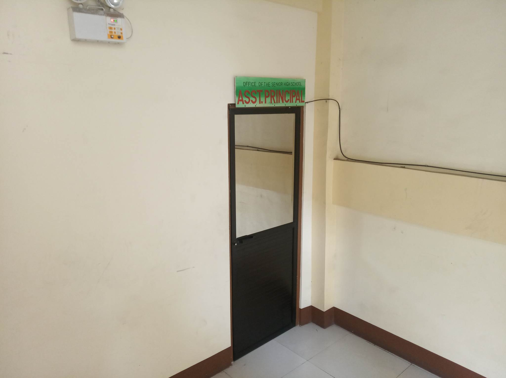

The Assistant-Principal Office is located in the SHS Building, tehe Assistant-Principal Office it served as a hub for collaboration, guidance, and support, ensuring a positive and inclusive school environtment for all members of the educational community.
"